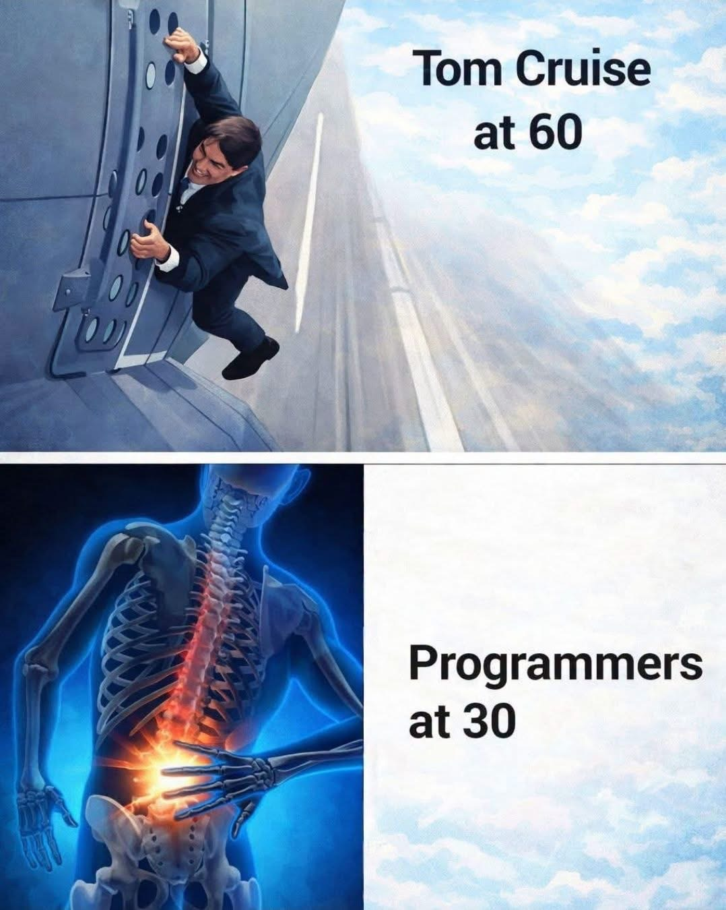
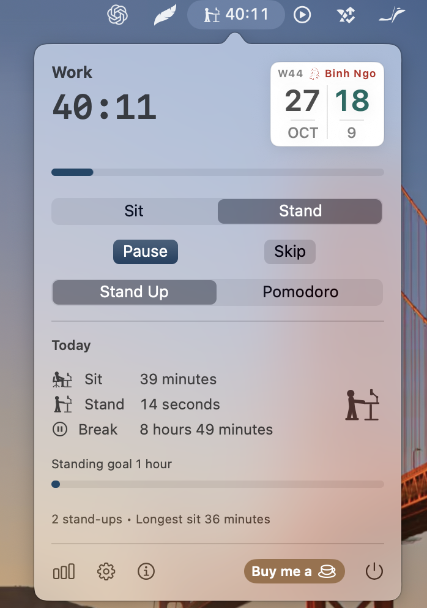
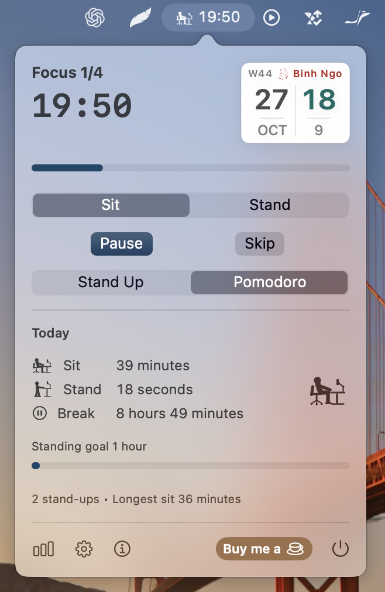
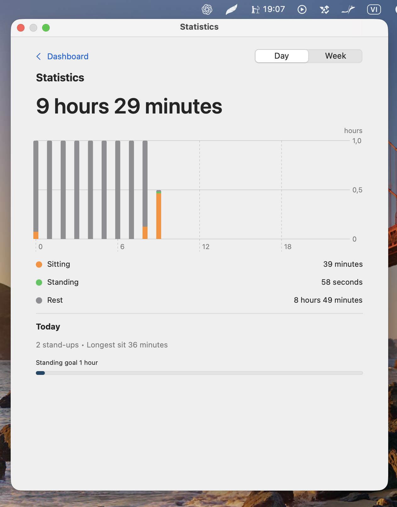
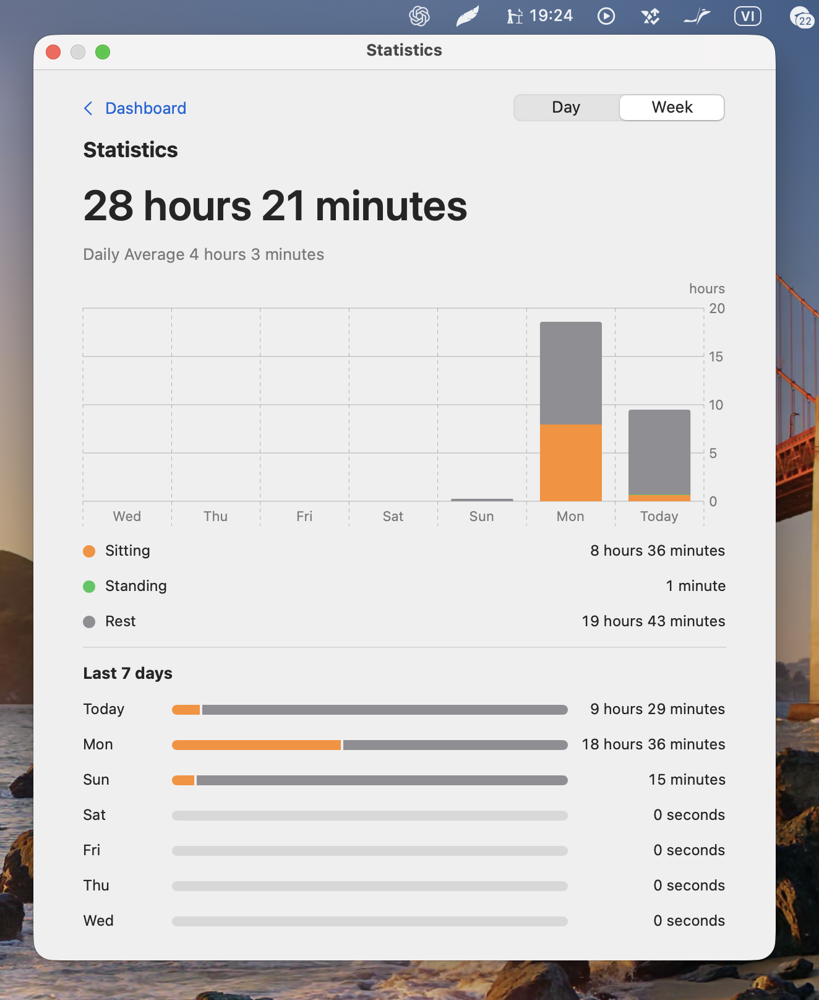
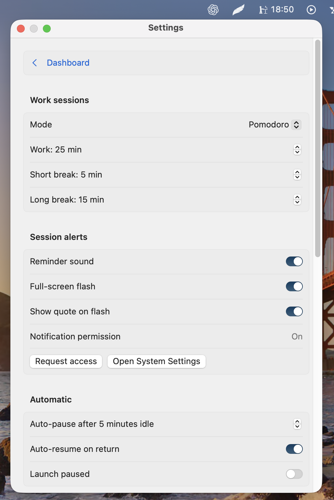
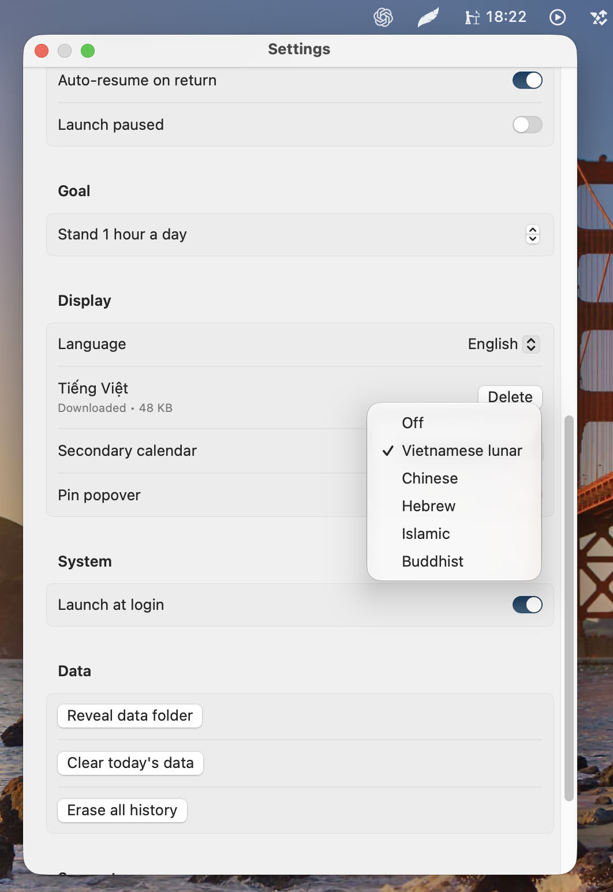
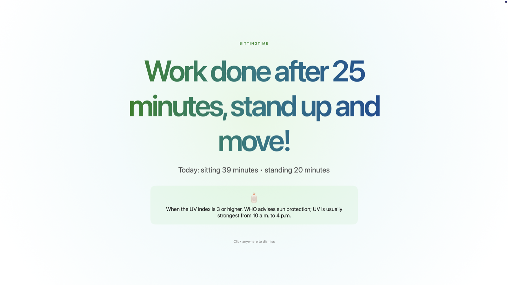
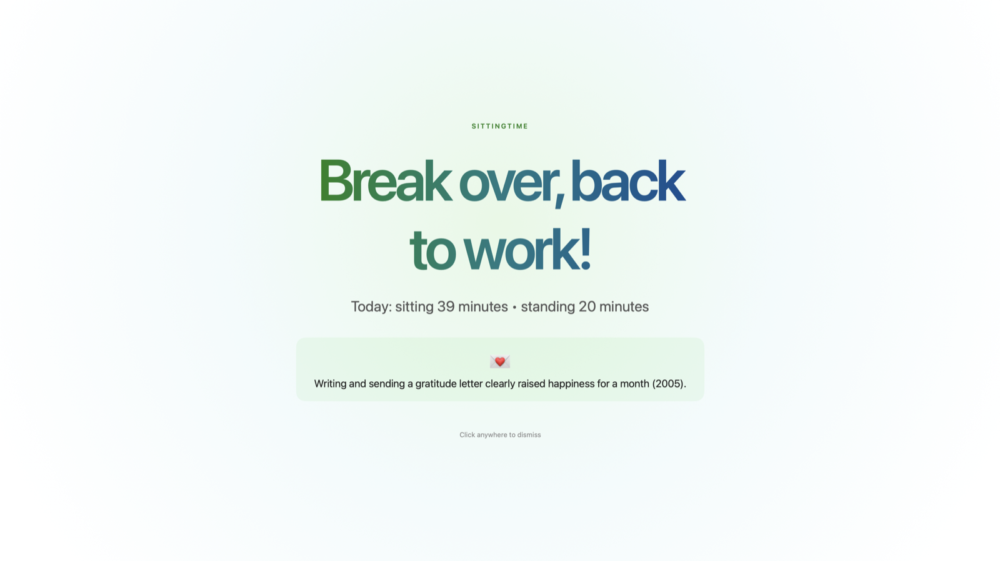

Stand Up
Work for 45 minutes, then take a 5-minute movement break. The next work session starts automatically.
45 min work → 5 min moveSittingTime lives in your system tray, keeps counting when its window is hidden, and gives your workday a built-in reason to get out of the chair.

See both timer modes, daily and weekly statistics, and the app settings.






The defaults are ready when you are. Adjust every session length in Settings to fit the way you work.
Work for 45 minutes, then take a 5-minute movement break. The next work session starts automatically.
45 min work → 5 min moveFocus for 25 minutes, take a 5-minute break, and get a 15-minute break after every four focus sessions.
25 focus → 5 short → 15 longShow the solar date alongside Vietnamese lunar, Chinese, Hebrew, Islamic, or Buddhist dates. The tile also shows the week number and lunar year.
Open SittingTime from the system tray on Windows or the menu bar on macOS.
See a summary of your timer sessions for one day or the past week.
See how time adds up across sitting, standing, and rest, with hourly bars for the day.
Check completed breaks and your longest sitting stretch, without keeping a separate spreadsheet.
Choose a daily standing goal. SittingTime can notify you once when you reach it.
Use a system notification or an optional full-screen alert when a session ends. Choose the sound and whether to show a short health fact.


The macOS disk image is public. Windows 1.1.8 installers are built and attached to a draft release awaiting owner publication.
The installer is ready in the Windows v1.1.8 draft release. It becomes publicly downloadable after the release is published.
Review Windows release ↗Release draft · owner publication required for public downloads
Native menu bar app. Open the disk image, then drag SittingTime into Applications.
Download for macOS ↗Start with Stand Up or Pomodoro. Let SittingTime remember the next transition for you.
Back to the top ↑